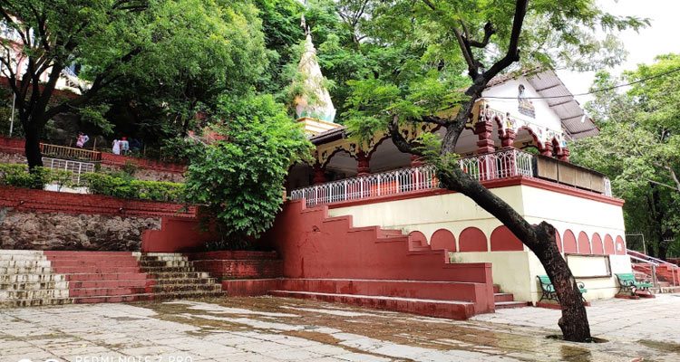
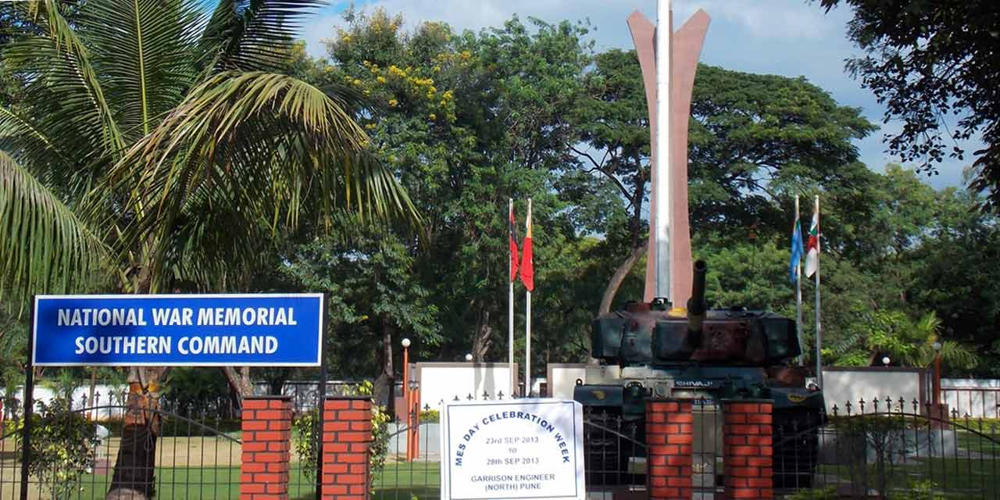
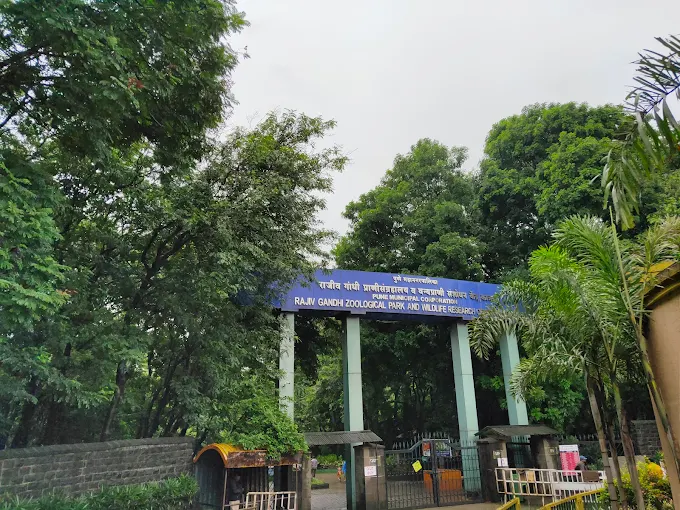
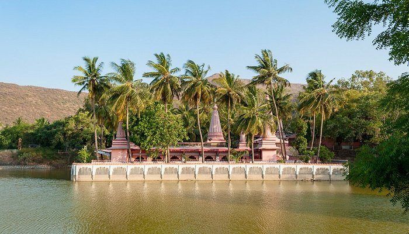
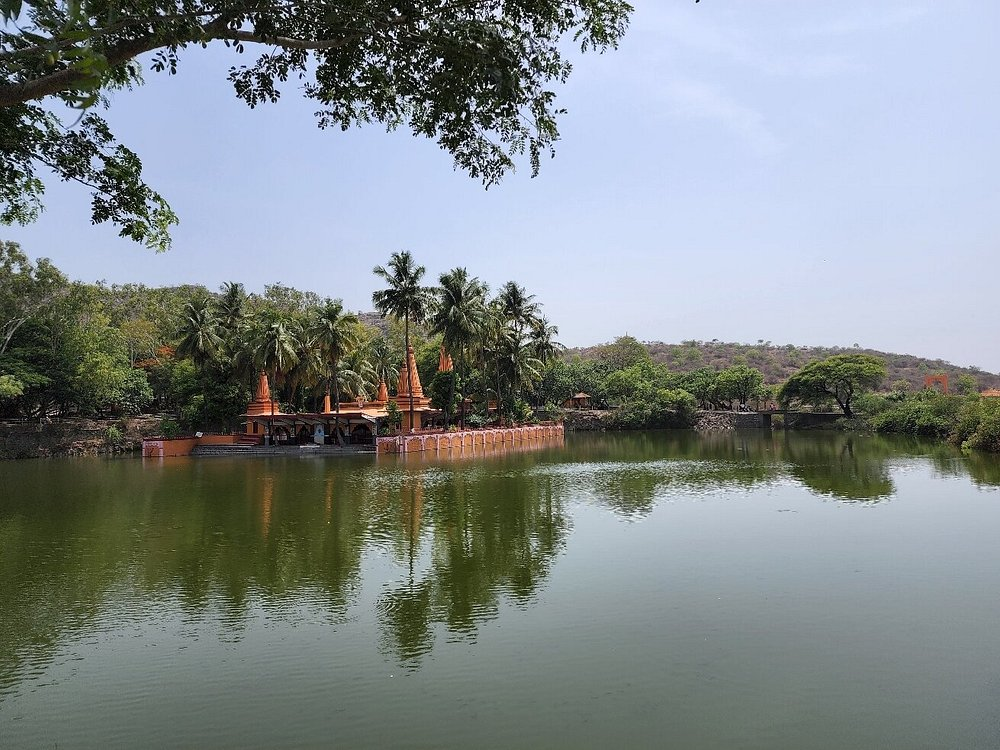
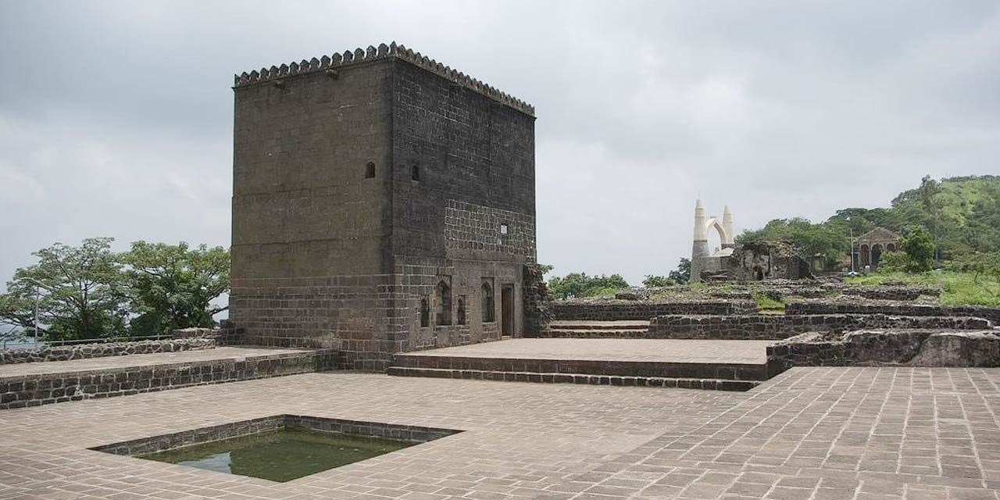

Famous Places In Pune
Shaniwar Wada

Shaniwar Wada Pune Entry Fee
Rs 20 per person for Indians
Rs 250 per person for Foreigners
Rs 25 per person for Light and Sound show
Ticket booking timings for light and sound show:
Everyday 6.30 pm to 8.30 pm
Shaniwar Wada Pune Timing
Monday to Sunday : 9:30 am – 5:00 pm
Built in around 1736, by Bajirao Peshwa, Shaniwar Wada is located in the heart of Pune city. Originally constructed as a residence for the Peshwas, it is a stately mansion, depicting influence of Mughal designs in its architecture.
The wada displays architectural excellence. It has intricately carvings and exquisite designs by the Maratha artisans. Shaniwar Wada boasts of a 21 feet tall main door, facing the north side. The famous Dilli Darwaza, also known as Delhi Gate, is one of the gates here. Another prominent gate here is Mastani Darwaza, which is said to be used by the Bajirao’s mistress. Both these gates are facing north. Khidki Darwaza faces east while the Ganesh Darwaza faces southeast. Another attractive feature of this wada is the fountain, which is designed in the shape of a lotus flower with sixteen petals.
In 1827, a fire broke out in which the entire palace, except the Mirror hall was caught. The reason of fire is still unknown. As of now, only a few parts of the actual palace can be seen. The remnants at Shaniwar Wada include a fortification walls with five gates, nine bastions, enclosing the entire complex, platforms and foundations. The Nagarkhana, its sturdy wooden pillars and intricate latticework also attract visitors with its unwavering beauty. At the center of the palace, you can get a glimpse into the original structure of the wada before the fire. There are paintings displaying various scenes of Hindu mythological epic Ramayana and Mahabharata.
Shaniwar Wada is open on every day of the week, from 9:30 in morning to 5.00 in evening. When you are here, do not miss the sound and light show at the Shaniwar wada. The show is conducted in English and Marathi. The timings are 7:15pm to 8:10pm for the Marathi Show and 8:15pm to 9:10pm for the show in English.
Location Map for Shaniwar Wada Pune
click here
Dagadu Sheth

Important Information:
Timings:
Shaniwar Wada is open daily from 8:00 AM to 6:30 PM.
Entry Fee:
INR 5 for Indians and INR 125 for foreigners.
Light and Sound Show Timings:
Check the schedule as it varies (usually 7:15 PM and 8:15 PM).
The Dagdusheth Halwai Ganpati Temple, located in Pune, is a renowned Hindu temple dedicated to Lord Ganesha. Established in 1893 by Dagdusheth Halwai and his wife after the loss of their son, it's known for its 7.5-foot-tall idol adorned with gold and jewels. The temple attracts millions of devotees, especially during the Ganesh Chaturthi festival, and is managed by the Shreemant Dagdusheth Halwai Sarvajanik Ganpati Trust.
Shrimant Dagdusheth Halwai Ganpati – the most endearing deity to the devotees. Shrimant Dagdusheth Halwai Ganpati is the epitome of pride and honor to the city of Pune. Devotees from every part of India and the world come here to pray to Lord Ganesha every year. Today, Shrimant Dagdusheth Halwai Temple is not only one of the most highly revered places of worship in India but an institution that is actively engaged in social welfare and cultural development through Shrimant Dagdusheth Halwai Sarvajanik Ganpati Trust. The temple speaks of a long and glorious history. The deity of Lord Ganesha was incepted by Shri Dagdusheth Halwai and his wife Lakshmibai way back, when they lost their only son to the plague epidemic. Every year, the Ganpati festival was celebrated with deep faith and enthusiasm, not only by Dagdusheth’s family but the entire neighborhood.
Historical Importance:
The temple was founded in 1893 by Dagdusheth Halwai and his wife, Lakshmibai, after their son's death.
Iconic Idol:
The main attraction is the 7.5-foot-tall Ganesha idol, richly decorated with gold and precious jewels, weighing around 40 kilograms.
Ganesh Chaturthi Celebrations:
The temple is a focal point during the Ganesh Chaturthi festival, with elaborate decorations, music, and processions.
Spiritual and Cultural Hub:
It's a place of worship, but also a venue for cultural events like music concerts and Atharvasheersh recitations.
Location Map for Dagadushet Pune
click here
Swaminarayan Temple

Mandir Timings
Murti Darshan
Morning : 7:00 am to 12:00 am
Evening : 4:00 pm to 8:30 pm
Aarti
Shangar Arti : 7:30 am ||
Rajbhog Arti : 11:15 am ||
Sandhya Arti : 7:00 pm ||
Shayan Arti : 8:30 pm
Ritual Duration : 10 to 15 minutes
Murti Darshan : 9:00 am to 10:15 am, 4:00 pm to 6:00 pm
Arti : 11:15 am
Sandhya Arti : 7:00 pm
Open to one and all, the BAPS Shri Swaminarayan Mandir was inaugurated in Feb of 2017 after only 24 months of construction time. The Mandir is about 184.6 feet Long by 181.6 feet Wide and 74.6 Feet High, Covering 33,523.36 Sq.ft. of Aera. Fully Stone Carved Without any Steel. It is Designed as Southern Shilpa Shaili by Sompura. The Mandir has 23 Samrans of Which 7 are Giant Ones Which Beautifies the Mandir from surroundings. Mandir is carved by hand Rajasthan and assembled in Lilburn like a giant 3-D puzzle. Mandir is set upon 140 Carved Pillars. It also has about 109 Beautiful Toran with 10,269 Carved Sculpture and Deities which is Representing the Heritage of Maharashtra and India. It represents True Devotion of Guruhari Pramukh Swami Maharaj, Guruhari Mahant Swami Maharaj and all Devoted Santo, Hari Bhakto. The Mandir is comprised of Indian pink Sandstone and Red Stone.
The BAPS Shri Swaminarayan Mandir in Pune is a beautiful example of traditional Nagara-style Hindu temple architecture, known for its intricate carvings and stone work. It features a structure made entirely of stone, without any steel, and is adorned with pink sandstone and red stone. The temple is a popular destination for both locals and tourists, offering a serene environment for worship and reflection.
Architecture:
The temple is built in the traditional Nagara style, characterized by its towering shikharas (spires) and intricate carvings.
Materials:
The temple is constructed entirely of stone, with pink sandstone and red stone sourced from Rajasthan. A unique feature is the absence of steel in the construction.
Design:
The temple is designed according to the Southern Shilpa Shaili style, crafted by Sompura artisans. It features 23 samrans (domes), including 7 larger ones, and is supported by 140 carved pillars.
Carvings:
The temple boasts approximately 109 torans (ornamental arches) and over 10,269 carved sculptures and deities, showcasing the rich heritage of Indian and Maharashtrian culture.
Inner Sanctum:
The inner sanctum houses sacred idols of Bhagwan Swaminarayan, Gunatitanand Swami, BAPS gurus, and other deities, which are believed to be inhabited by the deities after the prana pratishta ceremony.
Visitor Experience:
Visitors can explore the temple's serene surroundings, participate in daily worship, and attend special religious ceremonies and festivals.
Location Map for Swaminarayan Temple Pune
click here
Iskon Temple
The ISKCON NVCC Temple in Pune, located in Katraj,
closes at 8:45 PM.
The temple is open from 4:30 AM to 1:00 PM
and again from 4:30 PM to 8:45 PM.
The ISKCON New Vedic Cultural Center (NVCC) in Pune is a prominent temple complex dedicated to Lord Krishna and Radha, located in Kondhwa, Pune. It's a major religious and cultural center, known for its stunning architecture, spiritual atmosphere, and various facilities. The temple complex includes a Radha Krishna temple, a Balaji temple, a meditation hall, a cultural hall, and a garden.
Key aspects of the ISKCON NVCC temple in Pune:
Architecture:
The temple complex features a blend of North and South Indian architectural styles, with red stone and marble used in the Radha Krishna temple and Kota stone in the Balaji temple.
Spiritual Significance:
It is a place of worship for deities of Sri Sri Radha Vrindavanchandra, Sri Sri Gaur Nitai, and Sri Sri Jagannath Baladev Subhadra, as well as Lord Venkateswara (Balaji).
Facilities:
The temple complex includes a Govinda's restaurant, a guest house, a Gaushala (cow shelter), and a gift shop.
Activities:
Visitors can participate in daily aartis, kirtans, Bhagavad Gita discourses, and various cultural and educational programs.
Events:
The temple hosts special events and festivals, including the Sunday Feast, which is a popular event featuring kirtans, discourses, and free prasadam.
Location:
The temple is located on Survey No, 50, Katraj – Kondhwa Rd, Tilekar Nagar, Kondhwa Budruk, Pune, Maharashtra.
In summary, the ISKCON NVCC temple is a well-maintained and beautiful temple complex that offers a blend of spiritual, cultural, and recreational experiences for visitors.
Location Map for Iskon Temple Pune
click here
Sarasbaug
Saras Baug Pune Address:
Saras Baug, Saras Baug Rd, Municipal Colony, Pune, Maharashtra, 411038, India
Saras Baug Pune Timings
Monday to Sunday : 6:00 AM to 9:00 PM daily
Sarasbaug is a major landmark in the city of Pune in India.[1] The place where the park now stands was once occupied by a small lake. However, the lake dried up and was later developed into Sarasbaug. The whole 25-acre (10 ha) complex is known as Sarasbaug. The Ganesh temple in Saras Baug is also known as Talyatla Ganapati (in Marathi:तळ्यातला गणपती ) which translates as the Ganapati of the lake.
All about Saras Baug in Pune
Spread over an area of 25 acres (10 hectares), Saras Baug is adorned with greenery. The prominence of saruscranes in the garden is the primary reason why the place is called today.
Saras Baug has a long history and was built by the great Peshwa leader, Nana Saheb Peshwa. In the middle of the garden on a small hillock, is a temple dedicated to Lord Ganesh. This temple is called the Talyatla Ganpati as it was once surrounded by a water body.
Saras Baug encounters hordes of devotees all through the year who visit the place in search of inner peace and harmony. The mantras and meditations that take place in the morning, make the place even more tranquil.
The garden is full of lovely spots ideal for picnics with families and loved ones. You can enjoy the leisurely walks on the green-carpeted grass and through the paved pathways created all around the park.
Location Map sarasbaug Pune
click here
Vetal Tekadi

Vetal Tekdi Pune Address: Pashan, Pune, Maharashtra, 411038, India
Vetal Tekdi Pune Timing:
Monday to Sunday : 12:00 am – 12:00 am daily
Vetal Tekdi Entry Fee and Timings
Vetal Hill Pune is best visited during the monsoon months (August and September) or the winter months (from November to February). During those months, you'll be able to experience the myriad shades of green in the surroundings.
Vetal Tekdi entry is free for all. It’s open throughout the day, 7 days of the week. You can spend about 2-3 hours exploring the area. Trek to Vetal Tekdi in the early morning hours to watch the sun come up the horizon.
Vetal Hill (or Vetal Tekdi, as it is locally called) is a 2600 ft high hillock surrounding Pune. It is among the well-known attractions in the city, which is often frequented by fitness enthusiasts for a refreshing run. It is also home to a variety of plants and bird species.
Where is Vetal Tekdi in Pune
Vetal Tekdi is in Kothrud area of Pune, on the western side of the city limits. It is the highest point within Pune city limits, visible from many parts of the city.
Things to do at Vetal Tekdi Pune
1. Nature walk and exercising – Local people come here in the morning for a walk among the lush greenery. The calm and fresh atmosphere on the hill attracts people to perform their daily stretches and yoga sessions, too. Visit Vetal Tekdi early in the morning, and you'll be able to witness a gorgeous sunrise.
2. Hiking and cycling – Vetal Tekdi Pune also offers an easy, but scenic hiking trail. Along the way, you get to explore a landscape covered with greenery and small ponds, and a breathtaking view of the surroundings. Cycling is also popular here.
3. Bird-watching – The hill is full of birds like Bulbul, Indian Robin and White breasted Kingfisher among others. You'll also find numerous colourful butterflies around. All these make it a perfect place for photography, a family picnic or an outing with friends.
Location Map vetaltekdi Pune
click here
Camp Burger
Location and Ambiance:
Situated in the Camp area of Pune, near Juna Pulgate (Old Pulgate).
Known for its vintage decor and furniture, reminiscent of an old-fashioned diner.
The restaurant has two sections, which are opened depending on the rush.
The interior is simple and clean, with a focus on the food rather than a luxurious setting.
Food and Pricing:
Specializes in large-sized burgers, which is how the place got its name "Burger King" (though officially changed to "Burger" now).
Offers a variety of burger options, with a focus on taste and quality ingredients.
Prices are considered affordable, making it a good option for budget-conscious diners.
May not be the most comfortable seating due to the aging infrastructure.
Crowds and Wait Times:
Popular among young crowds and can be quite crowded, especially during peak hours.
Expect long wait times, especially at the counter, due to the high demand.
The limited parking space can also add to the inconvenience, with customers often needing to circle the area or park on the street.
Other Considerations:
May not be ideal for those seeking a fancy or modern dining experience.
While the place is generally clean, the aging infrastructure might be noticeable.
The restaurant is known to be crowded and has a long wait time due to the popularity of the restaurant.
It is not wheelchair accessible.
Accepted payment methods include credit cards and cash.
Location Map Camp Burger Pune
click here
Aga khan palace

Timeings
9:00 AM to 5:30 PM every day, including weekends
There are no weekly off days, and it's open on Saturdays and Sundays
Located on the Nagar Road, at a distance of 2 km from the Bund garden, Aga Khan Palace is a one of the popular tourist spots in Pune. This palace was built in 1892 by Sultan Mohammad shah Aga khan, primarily to help famine affected people in Maharashtra. This palace, which is spread across an area of 1756 sq. meters, took 5 years for its completion.
Aga Khan Palace, Pune is known for its memorials of Kasturba Gandhi, who was the wife of Mahatma Gandhi and Mahadev Desai, a close associate of Mahatma Gandhi. Apparently both of them had breathed their last in the premises of this palace. In the honour of them, their memorials have been built inside the palace ground. The world famous architect Charles Correa had designed the memorials.
Inside the Aga Khan Palace complex, you will find a shop from where you can buy pure Khadi and cotton garments and handmade textiles. Trainings are also given here at the complex. There is also provision of free trainings for those with weaker financial background.
It is open for visitors throughout the week, except on national holidays. You can visit the palace from 9 in morning to around 5:30 in evening.
Location Map Aga Khan Palace Pune
click here
Prati Balagi palace
Balaji Mandir Pune Timings and Entry Fee
Balaji Mandir Pune is open on all days of the week from 5 AM to 8 PM. And you don’t require any fee to enter the temple and pray.
The temple rituals begin with Suprabhatam (at 5 AM). Then, morning pooja, afternoon pooja and evening pooja sessions begin at 6.30 AM, 10 AM and 6 PM, respectively. From 8 PM onwards, Shuddhi and Ekantseva rituals begin.
The maha prasadam coupon is available between 9 AM and 3 PM.
Balaji Temple also carries out special Abhishekam (from 7.30 AM to 8 AM) and Unjal-Seva (from 5 PM to 05.45 PM) on Fridays.
Visit this temple during the morning hours in the monsoon season to get the best experience. You will get a clean and green view of the temple surroundings and the route. Also, the place is free from the crowd early in the morning. You can have your darshan within an hour.
Sri Balaji Mandir Pune is a close replica of the famous Balaji Temple of Tirumala, Tirupati. Therefore, people also call it Prati Balaji Mandir and Mini Balaji Mandir.
It is built amidst lush green landscape, in a peaceful environment. And it is a treat for those who want to get the blessings of Lord Balaji. All pujas and sevas in this Balaji Mandir at Pune are performed by priests from the Tirupati Balaji Temple. You even get laddoo as prasad (like Tirupati Temple).
Where is Balaji Temple Pune?
Shree Balaji Mandir Pune is at Ketkawale, near Narayanpur. It is about 45 kilometres away from Pune. The road passes through green fields, gurgling streams and many small cascading waterfalls as you approach the temple. So, even the route to the temple is a memory worth savouring.
Architecture of Balaji Mandir
The Tirupati Balaji Mandir near Pune has been constructed under the guidance of Tirumala Tirupati Temple Devasthanam.
As you enter the premises, you'll come across the beautifully crafted entrance gate. It is made up of stone. The temple walls have carvings similar to the original temple. And the interior is decorated with woodwork.
The black stone and other building materials used in the temple have been brought from Kanchipuram. And the main deity of the temple, Lord Balaji, is carved in wood. It is painted with grey oil paint.
It took almost 7 years, from 1996 to 2003, to build this temple.
How to reach Balaji Mandir in Pune?
Balaji Mandir is near Narayanpur, off the Pune-Bangalore Highway. It is about 45 km away from Pune railway station and the bus stop. From the airport, this Mini Balaji Temple is 55 km away. And here are the various ways to come here –
By bus – Plenty of buses run to Balaji Temple from Pune. You can take a state-run or private bus from the Swargate bus stop.
By cab – Booking a full-day cab from top car rental companies in Pune would be a more convenient way to visit the temple. These are available all over the city and you'll take only about an hour to reach the temple. Also, you'll be able to explore all the nearby places comfortably.
Pune Tourism, a division of Holidays DNA offers Pune tour packages at affordable rates so that you can have a relaxed and memorable holiday with your family and friends. With these packages, you can explore all the popular places to visit in Pune comfortably in a private vehicle. Please fill in the Contact Us form to know more about us!
Location Map Prati Balagi Pune
click here
Bhuleshwar

The Bhuleshwar Temple is a Hindu temple of Shiva, situated around 45 kilometres from Pune and 10 km from Pune-Solapur highway from Yawat in Maharashtra, India. The temple is situated on a hill and was built in the 8th century. There are classical carvings on the walls. It has been declared as a protected monument.
The temple is also known for the folk-tale about it, when a bowl of sweet (pedhas) is offered to the Shiva Ling, one or more of the sweets disappear.
Location and construction
According to the Hindu's the temple was built by Panch Pandava. Also, another temple of king Bharata is built at Bhartgaon near Bhuleshwar temple. Jirnodhar of the Bhuleshwar temple was done during the period of 1230 AD during Yadava Rulers. The fort on which the temple is situated is called the Daulatmangal fort, also at times referred to as Mangalgad. Black basalt (AA type) rock was brought to construct this temple which is different as compared to surrounding brownish color basalt which has high percentage of calcium (lime mortar).[citation needed] The fort was constructed in 1629 by Adilshahi general, Murar Jagdev Pandit who, in 1630, looted Pune.
Surroundings
Many birds migrate here and to Narayanbet, which is fifteen kilometers from here, during summer. The spot is hence visited by many bird-watchers.There are many places to visit around Bhuleshwar Temple. Such as Chintamani Temple of Theur, Ramdara temple and Jejuri Temple.
Location for Bhuleshwar Pune
click here
Chaturshring

The Chattushringi[1] Temple also spelt as Chattushrungi Temple is a Hindu temple in the city of Pune in Maharashtra state of India.[2] The temple is located on the slope of a hill on Senapati Bapat Road.[3] It is said to have been built during the reign of the Maratha king Shivaji. The temple is looked after by Chattushringi Devasthan (Temple) trustees.
Chattushringi (Chattu means four) is a mountain with four peaks. The Chattushringi temple is 90 feet (27 m) high and 125 feet (38 m) wide and is a symbol of power and faith. One has to climb more than 200 steps to reach the shrine of Goddess Chattushringi. In the temple premises there are also temples of Goddess Durga and Lord Ganesh. This includes eight miniature idols of Ashtavinayaka. These small temples are located on the four separate hillocks.

Legend
Located in Pune, Maharashtra, the Chaturshringi temple is a temple dedicated to the goddess Chatusringi. This temple is located on the slope of a hill on Senapati Bapat Road near Pune Vidyapeeth. A beautiful view of the city is visible from the top of the temple. अग्य की नॉट्राया अभा अधे ही बनती है It is believed to have been built during the reign of the Maratha king Chhatrapati Shivaji Maharaj. This temple is famous for its unique architecture. It is considered a symbol of power and faith in the city of Pune. This is one of the most visited temples in Pune. There is a crowd of devotees here to see and worship the goddess Maa. At the time of Navratri, there is a lot of crowd here. This temple is open for devotees from 6 am to 9 am. This temple is managed by चत्तुश्रृंगी देवी मंदिर तथारा है.
The legend associated with the temple is that, once there was a rich and prosperous merchant named Durlabhsheth Pitambardas Mahajan who was an ardent believer of Goddess Saptashrungi Devi and visited Vani every now and then. But as he grew older, he could no longer travel and this hindered him from visiting the temple and it bought him sorrow in his heart, he prayed Saptashrungi Devi with tears and then one night the Goddess Saptashrungi Devi appeared in his dream and told him, "if you can not come to me, I will come to you & stay near you." She told him to come to a mountain situated in the North-West of Pune & dig there. The place as described by the goddess was traced out and a miracle happened as he found a natural statue of the goddess (swayambhu devi). He constructed the temple at that place and this is the same temple which was renovated from time to time, which is the present temple
Deity
The presiding deity of the temple is Goddess Chattushringi, also known as Goddess Ambareshwari. She is also considered as the presiding deity of the city of Pune. The temple is maintained by the Chattushringi Devasthan Trust. Every year a fair is held at the foothills on the eve of Navratri. Thousands of people gather to worship the Goddess Chattushringi
Location for Chaturshring Pune
click here
Tehur Chintamani Ganpati
Theur Ganpati, also known as the Chintamani Temple, is a significant Hindu temple dedicated to Lord Ganesha, located in Theur, near Pune, Maharashtra. It is one of the eight Ashtavinayak temples, revered shrines of Ganesha in the region. The temple is situated at the confluence of the Bhima, Mula, and Mutha rivers.
Visiting Theur:
Location: Theur is approximately 25 kilometers from Pune, easily accessible by road.
Ashtavinayak Yatra: Theur is often visited as the second temple in the Ashtavinayak pilgrimage, after Morgaon, due to its convenient location.
Peshwa Wada: The Peshwa Wada, also known as the Peshwa Palace, is located behind the temple and is worth visiting.
Theur Ganpati is a place of deep religious importance and offers a serene and spiritually uplifting experience for devotees and visitors alike.
Ashtavinayak Shrine:
Theur Ganpati is one of the eight prominent Ganesha temples that form the Ashtavinayak pilgrimage circuit.
Self-manifested Idol:
The idol of Lord Ganesha in the temple is believed to be swayambhu (self-manifested).
Trunk Direction:
The idol is east-facing, with its trunk turned towards the left.
Mythological Significance:
The temple is associated with Lord Brahma meditating here to attain peace of mind, earning Ganesha the name Chintamani, meaning "wish-fulfilling jewel".
Architectural Style:
The temple has a distinctive architectural style, with a wooden Sabha Mandap and a North-facing entrance.
Peshwa Influence:
The Peshwa rulers, particularly Madhavrao I, contributed to the temple's structure and renovation.
River Confluence:
The location at the confluence of three rivers (Bhima, Mula, and Mutha) adds to the temple's spiritual significance.
Spiritual Atmosphere:
The temple is known for its serene ambiance and is believed to offer devotees peace of mind and relief from mental burdens.
Location for Tehur Pune
click here
Vishrambaug Wada
Vishrambaug Wada Pune Timings
Day Timing
Monday Closed / Holiday
Tuesday to sumday 10:00 am – 7:00 pm
Vishrambaug Wada Pune Entry Fee
Rs 5 per person
Vishrambaug Wada Pune Address:
RB Kumthekar Rd, Perugate, Sadashiv Peth, Pune, Maharashtra, 411030, India
Built in the year of 1811 by Peshwa Baji Rao the second, Vishrambaug Wada is a three storied Peshwa mansion, which still captivate everyone with its historical richness which it symbolizes now. Situated in Sadashiv Peth, at the intersection of Bajirao Road and Laxmi Road, this wada, although in neglect state, does display an excellence of architecture.
The entrance is also magnificent with its carved pillars which are made up of teak-wood, still standing strong. The Vishrambaug Wada stands majestically amidst the hustle bustle of a busy market. Its cypress-shaped columns, decorated ceilings, stone floor and teak gallery on both the sides of entrance take you to a glorious era of Bajirao. On the first floor of the building, you will find a huge hall, darbar, with intricately carved ceilings, grand chandeliers along with teakwood pillars with exquisite carvings. Its magnificent teak balcony, where visitors are not allowed now, is said to the place from where Bajirao's musicians used to perform.
A part of the wada is open for public visit, with the rest of the part being used as offices. Although just a few parts are seen, this place is worth exploring. It gives you a glimpse into the grandeur of Bajirao era in Maharashtra. The impeccable fineness with which it was constructed is something worth remembering and admiring. After the British take over, and the decline of Peshwa rule, Vishrambaug Wada was used a jail. It was also used to house the Pune Municipal Corporation office, from the year of 1930 to 1958.
Currently, a number of Government offices operate from Vishrambaug Wada. A considerable section of it is also used at the post office. There is also a handicraft shop by SMILE (Savitri Marketing Institution for Ladies Empowerment) inside the Wada complex.
Location for Vishrambaug Wada Pune
click here
David Synagogue
David Synagogue Pune Entry Fee
No entry fee
David Synagogue Pune Timings
Day Timing
Monday to Sunday 6:00 am – 6:00 pm
David Synagogue Pune Address:
Opp. Nehru Memorial Hall,Dr. Ambedkar Road, Camp, Pune, Maharashtra, 411001, India
Situated on the Moledina Road, David Synagogue, also known as Ohel David Synagogue, was built the Late David Sassoon. Its construction was started in 1863, which was completed in 1967. David was known for his philanthropic works in Pune. He had also built the Sassoon Hospital.
Because of the red bricks used in David Synagogue construction, it is popularly known as Lal Davel or Red Synagogue or Red Temple. Although it is a place dedicated to Jewish community, it attracts visitors from all section of the society, from all over the world. Its startling architectural beauty, combined with the religious significance, makes for a worth remembering sight. It has been constructed in the neo-Gothic style, and displays a unique usage of various shades of colors.
This Synagogue used to see more number of Jewish visitors during the monsoon and summer season. As many Jewish residents from Mumbai and nearby places would spend their summer and rainy months here in Pune, owing to its better climatic conditions. In the premises of the David Synagogue, there is tomb of the Late David Sassoon, where he had resided when alive. In its premises, you will also find a Mikvah.
Apparently, a Hazzan from Mumbai goes to this synagogue to conduct Shabbat prayers. One of the popular tourist attractions of Pune, this Synagogue captivates visitors with its structural beauty. The spiritual calmness, which it radiates, also presents tourists with an opportunity to rejuvenate themselves amidst the clarity and tranquillity of this place. It is a perfect amalgamation of entrancing beauty and religious sanctity. It is easily accessible. Once can take a direct taxi or auto rickshaws to this place. There are also many buses until here.
Location for David Synagogue Pune
click here
Friendship Garden
Pune-Okayama Friendship Garden Pune Timings
Monday to Sunday
6:00 AM - 10:30 AM
4:00 PM - 8:30 PM
Pune-Okayama Friendship Garden Entry Fee
Rs 5 per person
Pune-Okayama Friendship Garden Address:
Sinhgad Rd, Pune Okayama Friendship Garden, Dattawadi, Pune, Maharashtra, 411030, India
From visiting all the historical places and forts to chilling at the cafes and restaurants, the cultural capital of Maharashtra, Pune, has a lot to offer. It will take days to explore the rich heritage of this beautiful city. So, if you get exhausted while experiencing the city life or knowing the oldest caves and fortresses, the gardens in Pune are a perfect escape to refresh your soul.
The beautiful gardens in Pune are famous for their lush greenery, colourful flowers, and well-maintained lawns. It’s a perfect place for the locals to hang out with their friends, family, and kids. And if you are visiting Pune, the Okayama Friendship garden deserves to be on your list of places to see for its eye-catching beauty.
Located on the Sinhagad Road in Dattawadi, Okayama Garden represents the friendship between Japan and Pune. The captivating landscape and the cultural significance have made the park one of the best sightseeing places in Pune.
History of Okayama Friendship Garden
In 1998, when Pune’s Mayor Dattatreya Gaikwad formed a “sister city” bond with Berman, eight other cities all over the globe came across to tie a knot with Pune. Among those eight cities, one of the most valuable “sister cities” of Pune was Okayama in Japan.
If you have never heard of the concept of sister cities, consider this as a legal or social agreement between two different (politically & geographically) cities for forming commercial and cultural ties. The concept of sister cities or international links between two cities began after the second world war. The idea behind developing such relations was to promote solidarity between the cities in allied countries that faced the devastating events of the war
To mark the Indo-Japanese friendship between Okayama and Pune, Okayama Friendship Garden was created under the sister city initiatives. The design of the friendship garden was inspired by Okayama’s 300-year-old famous Korakuen Garden. The park was built in 1700, across 12 hectares, by the Ikeda royal family.
The Okayama Friendship Garden is also known as the Pu. La. Deshpande Udayan. It was named after well known Marathi writer and humorist Purushottam Laxman Deshpande. He won the Padma Bhushan in 1990. After his death, the Pune Municipal Corporation named the garden after him.
Many rulers in India build gardens for either relaxation or for aesthetic pleasure. But for traditional Japanese culture, gardens were built to symbolise peace. They are inspired by Buddhist, Taoist, and Shinto philosophies that consider gardens as a place for meditation and spiritual practices.
The Okayama Friendship Garden in Pune strives to establish the Japanese tradition in India to build a peaceful and cultural relationship between the two countries.
Location for Pune-Okayama Friendship Garden Pune
click here
Jejuri
Jejuri Khandoba Temple Timings
Monday: 6:30 AM - 12 PM & 1 PM - 8:30 PM
Jejuri Khandoba Temple Entry Fee
General Entry is Free
Special Darshan available for Rs. 50
Best Time to Visit Jejuri
The optimal period to visit the Jejuri is from October to February. During these months, visitors can comfortably explore the town and enjoy sightseeing to the fullest. For those interested in experiencing local celebrations, it is recommended to plan your visit around the renowned Bhandara Festival and Champa Shashti Festival. Jejuri typically experiences mild to moderate rainfall during the rainy season, leading to increased humidity. However, this time is perfect for those who appreciate the lush greenery and vibrant landscapes that the monsoon season offers. It is advisable to avoid visiting Pune during the summer months, as the temperatures can be quite extreme.
How to Reach Jejuri
The nearest airport to Jejuri is Pune Airport which is at a distance of about 60 Km away. From Pune, one can easily reach Jejuri by using local transport services or taxi. Jejuri has its own railway station, and is connected with almost all the routes of the country. One can reach Jejuri by bus from Pune, Nashik, Matheran, Lonavala, Shirdi, and Mumbai.

About Jejuri
At a distance of 48 Km from Pune, Jejuri is a town and municipality situated to the southeast of the Pune city in Maharashtra. The town is home to the most renowned temples in Maharashtra known as Khandoba Temple dedicated to Khandoba, who is also known as Mhalsakant or Malhari Martand in the region. Khandoba is the important god worshipped by Dhangar, the oldest tribes in Maharashtra. It is believed that Khandoba is a god of Sakamabhakti, the god who fulfills all the desires of his devotees. It is one of the must-include places in the Pune family packages.
History of Jejuri
The Khandoba Temple in Jejuri dates back to the 12th and 13th centuries, with its initial construction taking place in 1608 AD. The Maratha chief Ragho Mambaji completed the hall and other structures by 1637 AD, while subsequent enhancements were made by the Holker rulers. Between 1737 and 1739, Chimaji Appa, the sibling of Peshwa Baji Rao I, donated church bells from Portuguese churches in Vasai to the temple. These bells were taken as trophies following Chimaji Appa's victory over the Portuguese in the Battle of Vasai in 1737. In 1742 AD, Tukoji Holkar contributed by adding pillars, and he finalized the battlefields and tank by 1770 AD. Additionally, shepherds who revered Khandoba as their family deity constructed staircases, lamps, cloisters, canopies, and gateways.
Mythology of Jejuri
The temple at Jejuri is considered one of the foremost centers of worship for Lord Khandoba, whose origins are intertwined with mythological narratives about Lord Shiva's incarnation to kill demons. Lord Khandoba, also referred to as Khanderaya, is revered as the Kuladevata by numerous farming families, Brahmins, and the nomadic Dhangar tribe in the Maharashtra and Deccan regions.
As per the legend, Khandoba is revered as a warrior deity who battled the demons Mani and Malla. He was supported by his two wives, Mhalsa and Banai, who are also honored alongside him in the temple. Mhalsa, the daughter of a merchant, is considered an incarnation of Goddess Parvati, while Banai, a shepherdess, is viewed as an incarnation of Goddess Ganga. Khandoba wed both women on the same day and at the same location, which is now the site of the temple.
Things to do in Jejuri
Khandoba Temple stands as the primary attraction in Jejuri, recognized as one of the most significant temples dedicated to Lord Khandoba in both Maharashtra and India. Perched atop a hill, the temple complex features two distinct shrines: the first, known as 'Kadepathar', is an ancient temple that presents a challenging ascent, requiring visitors to navigate approximately 750 steps. At this sacred site, one can find a self-manifested Linga of Lord Khandoba alongside his consort, Goddess Mhalsa. The second shrine, the more contemporary and celebrated Gad Kot temple, offers a less strenuous hike. Both temples are constructed with fort-like architecture, imparting a regal ambiance.
Elevated at 2,356 feet, the Gad Kot temple, also referred to as Jejuri gad, can be accessed via three sets of steps from the east, west, and north. The northern staircase leads directly to the temple's main entrance. This temple features around 450 steps, 18 arches, and approximately 350 Deepmalas. Enclosing the main temple is an eight-sided fort boundary that stretches 350 yards (320 meters) in length. The entrance is embellished with a large statue of Nandi.
Constructed in the Hemadpanthi architectural style, the temple comprises an outer square hall and an inner sanctum. Within the sanctum lies a linga, symbolizing Shiva, along with three pairs of images depicting Khandoba and his first wife, Mhalsa. Additionally, there is a murti of Khandoba depicted as a warrior on horseback. Worship practices for Khandoba include offerings of turmeric, belfruit leaves, and naivedhya made from onions and various vegetables. Devotees also present flowers and turmeric to the deity, often tossing turmeric into the air as a form of offering, resulting in the steps and surroundings of the hill temple being tinged with a yellow hue.
Dress Code & Other Restrictions of Jejuri Khandoba Temple
While Khandoba Temple in Jejuri, it is recommended to adhere to modest clothing that covers your upper arms and legs as a sign of respect. Men are encouraged to wear a dhoti or pajama paired with an upper garment, as well as formal trousers and shirts. Women may opt for a saree, half saree, or chudidhars. It is advisable to refrain from wearing contemporary attire such as mini-skirts, ripped jeans, shorts, and sleeveless tops while on the temple grounds.
Location for Jejuri Pune
click here
Khadakwasala

Khadakwasla is a dam on the Mutha River situated 20 km from the City of Pune. This dam is one of the main sources of water for Pune. In the vicinity of the dam, there is the well-known National Defence Academy and Central Water & Power Research Station(CWPRS). Just a few kilometres up the road, lies Sinhagad Fort and the twin dams of Panshet and Varasgaon which mainly supply water for irrigation.

What is Khadakwasla famous for?
Khadakwasla is primarily famous for its dam on the Mutha River, which is a major source of water for Pune and its suburbs. Additionally, it's known for the National Defence Academy (NDA), which is located nearby, and the Central Water & Power Research Station (CWPRS). The dam itself is a popular tourist spot, offering scenic views and recreational activities.
Khadakwasla Dam:
This dam, built on the Mutha River, is a vital source of water for Pune. It also creates the Khadakwasla Lake, a popular picnic spot and a place to enjoy the natural surroundings.
National Defence Academy (NDA):
This prestigious tri-service military academy is situated in Khadakwasla. It's the first tri-service academy in the world.
Central Water & Power Research Station (CWPRS):
This research station is also located in Khadakwasla, contributing to the area's significance in water resource management.
Tourist Attraction:
The dam and its surrounding area are popular tourist destinations, offering scenic views, opportunities for photography, and access to nearby attractions like Sinhagad Fort and Karla Caves.
Location for Khadakwasala Pune
click here
Nationalwar Memorial Southern Command

The entry fee for the National War Museum in Pune is ₹20 per adult, according to Tripadvisor.
It is a popular tourist attraction in Pune, commemorating Indian soldiers who died in the line of duty.
The museum is open from 9 AM to 5 PM, but is closed on Wednesdays,
according to Tripadvisor.
Pune, a city that resounds with vibrancy and energy, is one of the top tourist attractions of Maharashtra. Besides being bestowed with the title ‘Oxford of the East,’ it is also a major Army base with rich history and war scars that remain a close part of the city. Southern Command is headquartered in Pune and has a few tourist spots that will bring you closer to the city’s history.
One such astounding gateway for people interested in the history of Indian defence is the National War Memorial Southern Command in Pune. It commemorates the stories and sacrifices of the Indian soldiers right here. This quaint little place resonates with the bravery of post-independence Indian soldiers coupled with a beautiful garden around it.
The Memorial strengthens the sense of belonging, high moral values, sacrifice and national pride in our citizens. It stands testimony to the sacrifices made by our soldiers during various conflicts, United Nations Operations, Humanitarian Assistance and Disaster Response Operations since Independence.
Why is the war memorial famous?
These memorials are important because they act as historical touchstones. They link the past to the present and enable people to remember and respect the sacrifice of those who died, fought, participated or were affected by conflict(s).
History of National War Memorial Southern Command
The silver jubilee celebration of the victory of India over Pakistan in 1971 initiated the idea to set up a memorial for the post-independence martyrs. To mark the gratitude of our frontline warriors, Pune citizens formed a committee under the Indian Express where they came forward to erect the memorial without government aid or initiative.
Brig N.M. Grat was the then chairman of the committee and approached the Southern Command wing to ask for a suitable piece of land. The board promptly acted upon the idea, and the place inaugurated the ever beautiful memorial on 15th August 1998.
#Trivia: Paintball gun is available here at an additional charge of ₹50/-
Location for Nationalwar Memorial Southern Command Pune
click here
Pashanlake
This 100-year-old lake was home to numerous birds in the ’70s and ’80s. Today the lake is covered with water hyacinths and rarely any birds can be seen here.
Pashan Lake is a man-made lake located in the Pashan suburb of Pune, India, approximately 10 kilometers from the city center. It was originally constructed by the British in the late 1860s by bunding the Ramnadi river to provide water to the Pashan village and surrounding areas. Today, it's a popular spot for birdwatching, nature walks, and photography, though its water quality has been affected by urbanization.
This 100-year-old lake was home to numerous birds in the ’70s and ’80s. Today the lake is covered with water hyacinths and rarely any birds can be seen here.
Pashan Lake was once a huge water resource with the presence of local and migratory birds. However, nowadays it is covered with water hyacinths with a lonely bird or two spotted around it. Initially, there was a moorland and thorny plants spread all over this place. Later on, a weir was built on the Ramnadi to provide a water resource for the governor's house (today’s Savitribai Phule Pune University) and it was called Pashan Lake. Around the ’70s and ’80s, numerous birds were seen at this full-fledged water resource. The records made by birdwatchers such as Prakash Gole, Vijay Paranjape, and Sanjiv Nalawade provide information about the flourishing bird diversity present in the past. Earlier, rare birds like the pattakadam, some species of ducks, water birds, and migratory birds were seen in the surroundings of Pashan Lake. Today this diversity has immensely decreased and, therefore, immediate conservation measures need to be taken to save Pashan Lake.
After 2004, the Pune Municipal Corporation made a plan of renovating Pashan Lake, which started in 2007. The Rs 20-crore project proved to be a curse for the beauty of Pashan Lake. The depth of the lake was increased using unscientific methods. The extracted sediment carried infinite invertebrates, which were the primary food for birds. Two islands were made inside the lake using this extracted material. The other decision of building a rock pitching for stabilising the lake also resulted in limiting the movement of birds. Ironically, a few prestigious organisations helped in this. The wall was built on the site of an area that contained most of the invertebrates. Birds like the sandpiper, snipe, plover, wagtail, red-wattled lapwing, and cormorants used to live in these areas. This decision made a negative impact on the movement and food of the birds living here.
The most important factor in the destruction of Pashan Lake is unlimited pollution. Polluted water coming from the surrounding factories, by washing clothes and vehicles in the lake water, and coming straight from the Ramnadi destroyed the quality of the natural lake water. It resulted in decreasing the dissolved oxygen level of water. In such a situation it is difficult for fish and other water species to survive in the lake. Organic pollution promoted the growth of water hyacinths. It should be cleaned to restore the prosperity of the lake. This would promote the movement of birds like the pheasant-tailed jacana and the growth of local plants and organisms. Water birds like the kamal, white-breasted waterhen, Eurasian coot, little grebe, pond heron, egret and kingfisher are already present here. Apart from this, birds like the white-spotted fantail, red-vented bulbul, sunbird, spotted owlet, ashy prinia, tailorbird, baya weaver, cinereous tit, and dove make their nests in the surrounding trees of the lake. Although these birds are seen in the vicinity today, their numbers have decreased. Many foreign birds, like the ruddy shelduck, northern pintail, northern shoveller, tern, common teal, Eurasian wigeon, and gadwall, used to visit Pashan Lake in the winter. Now, most of them have stopped coming and others have decreased in number. All five species of wagtail are observed here. Forest wagtails and citrine wagtails are rarely seen. The number of grey wagtails, yellow wagtails, and white wagtails has incredibly decreased.
Although Pashan Lake is on the verge of destruction, the government is still supporting this project. Punekars should come together and build a movement to save Pashan Lake. Firstly, it will pressurise the government to audit the renovation project and secondly oblige them to consider public opinion in future projects. Also by establishing a vigilance committee for such lakes and mountains we can stop the repetition of mistakes in the future.
Location for pashanlake Pune
click here
Pataleshwar cave
The Pataleshwar Caves in Pune are an 8th-century rock-cut Hindu temple dedicated to Shiva, carved from a single basalt rock. They are also known as the Panchaleshvara temple or Bhamburde Pandav cave temple. The temple is a monolithic structure, featuring a prominent circular Nandi mandapa and a large pillared mandapa. It's a protected monument under the Archaeological Survey of India.
Historical Significance:
Carved during the Rashtrakuta dynasty, the Pataleshwar Caves are considered one of the oldest structures in Pune.
Architectural Features:
The temple is built on the vastu-purusha-mandala design principle, with a symmetrical grid layout and the main temple at the center. The main sanctum houses a Shiva linga, and there are two smaller cells on either side, likely originally dedicated to Brahma, Vishnu, and Shiva.
Monolithic Structure:
The entire temple was carved from a single piece of basalt rock.
Current State:
The temple is currently dedicated to Parvati, Shiva, and Ganesha, with new idols placed in the complex. The interior has suffered some damage from vandalism, and the exterior has been affected by natural weathering.
Accessibility:
The temple is located in the heart of Pune and is easily accessible by public transport. It's open to the public during the day, with no entry fee.
Visitor Experience:
The temple offers a peaceful and serene atmosphere, allowing visitors to experience the cool interior and imagine the craftsmanship of a bygone era.
Location for Pataleshwarcave Pune
click here
peacockbay
Peacock Bay Pune Entry Fee
No Entry Fee
Peacock Bay Pune Timings
Timing
Monday to Sunday 9:00 am – 6:00 pm
Peacock Bay Pune Address: NDA Rd | Khadakwasla, Pune, Maharashtra, 411023, India
Peacock Bay, located at the National Defence Academy in Pune, is a scenic area known for its abundant peacocks and diverse flora and fauna. It's a popular spot for nature lovers and adventure enthusiasts, offering activities like sailing, windsurfing, and glimpses of wildlife like deer and civets. The bay is part of the Khadakwasla Dam's lake and is a venue for various NDA competitions and events.
Abundant Peacocks:
The area is named for the large number of peacocks that can be spotted here.
Diverse Wildlife:
Besides peacocks, the area is home to deer, lion-tailed macaques, and civets.
NDA Activities:
Peacock Bay is a hub for NDA's water sports activities, including sailing, windsurfing, and dinghy races.
Scenic Beauty:
The bay offers picturesque views of the lake and surrounding landscape.
Location: It's situated near the Khadakwasla Dam, about 12 km from Pune.
No Entry Fee: There is no entrance fee to visit Peacock Bay.
Ideal Visiting Time: The best time to visit is from July to February.
Location for peacockbay Pune
click here
Rajadinkarkelkar
Timings
10:00 AM to 5:30 PM (Daily)
Ticket INR 50 for adults, INR 20 for children (Indian Nationals); INR 200 for adults, INR 50 for children (Foreign Nationals)
Photography is allowed but requires an additional fee
Required Time 2-3 hours
Restricted Items
Food, drinks, and smoking are not allowed inside the museum
The Raja Dinkar Kelkar Museum in Pune, Maharashtra, is a tribute to the passion and dedication of Dr. Dinkar G. Kelkar, who single-handedly built this impressive collection of artefacts. Established in 1962, the museum houses more than 20,000 objects, including sculptures, paintings, and handicrafts. The museum is famed for its fascinating assortment of items that represent the rich cultural heritage of India. Dr. Kelkar's love for art and history led him to travel across the country, collecting unique and extraordinary pieces that now grace the halls of this remarkable museum.
Raja Dinkar Kelkar Museum is known for
The museum is known for its vast collection of over 20,000 artefacts, showcasing the rich cultural heritage of India. The museum features a wide range of objects, including sculptures, paintings, handicrafts, textiles, musical instruments, and decorative items. Some of its notable exhibits include the Mastani Mahal, a recreation of the palace of Bajirao's queen Mastani, and an impressive array of ancient musical instruments.
Tips for Visiting Raja Dinkar Kelkar Museum, Pune –
Allocate enough time to explore the vast collection at the museum.
Guided tours are available for a better understanding of the exhibits.
Photography is allowed but requires an additional fee.
Be respectful of the artefacts and refrain from touching them.
Location for Rajadinkarkelkar Pune
click here
Shinde chhatri

Entry Fee:
There is a small entry fee of ₹10 for Indians and ₹100 for foreigners.
Typical Visit Time:
A typical visit is estimated to take around 30 minutes.
Location:
The Shinde Chhatri is located in Wanwadi, Pune.
Parking:
Free parking is available for a limited number of cars and two-wheelers.
Shinde Chhatri in Pune is generally well-regarded, particularly for its architecture and historical significance. Many visitors appreciate the intricate carvings, paintings, and the Anglo-Rajasthani style of the structure. Reviewers also note its peaceful atmosphere and the presence of a Shiva temple within the complex. While some find the typical visit time to be around 30 minutes, others suggest spending more time exploring the various attractions. However, some reviews mention the need for better maintenance of public toilets and the overall cleanliness of the premises.
Architecture:
The Anglo-Rajasthani style, carvings, and paintings are major attractions.
Historical Significance:
The memorial to Mahadji Shinde, a Maratha commander, is a key feature.
Peaceful Ambiance:
Many visitors find the place to be serene and conducive to quiet reflection.
Temple:
The presence of a Shiva temple adds to the site's appeal.
Accessibility:
While there isn't a wheelchair-accessible entrance, there is wheelchair-accessible parking.
Location for Shindechhatri Pune
click here
Rajgad

About Rajgad
Rajgad is a Hill region fort situated in the Pune district of Maharashtra, India. Formerly known as Murumbdev, the fort was the first capital of the Maratha Empire under the rule of Chhatrapati Shivaji Maharaj for almost 26 years, after which the capital was moved to the Raigad Fort.
At a distance of 54 km from Pune, Rajgad is an ancient hill fort situated in the Pune district of Maharashtra. It is one of the top tourist places in Pune and also one of the popular places of trekking in Maharashtra.
Rajgad Fort is one of the grand forts of the Sahaydris and lies at an altitude of 1400 m (4, 600 feet). Formerly known as Murumdev, Rajgad Fort was the capital of the Maratha Empire during the rule of Chhatrapati Shivaji Maharaj for 25 years, before moving the capital to Raigad Fort. The Rajgad Fort was built with the treasure found on the adjacent Torna Fort. This was one of the favourite forts of Shivaji Maharaj and he stayed the most in this fort. Many historical events took place in this fort, such as the birth of Shivaji's son, Rajaram Chhatrapati, his queen, Saibai's death and Afzal Khan's head is buried in the fort.
The fort is divided into four parts, Padmavati Machi, Suvela Machi, Sanjeevani Machi, and Balekilla (small fort). The fort is an example of splendid design and construction. The diameter of the fort at the base is 40 km making it difficult for anybody to lay siege to it.
Sanjeevani Machi: The three layer fortification of Sanjeevani Machi is simply a marvel and is located on the southwest end. This extends approximately for 2.5 km along with many cisterns. The lower layers of the fort were separated by fortified bastion along with gate in order to defend independently. There is also an underground escape route which leads directly to the outermost fortification.
Suvela Machi:
Suvela Machi, located on the eastern part of Rajgad fort, is a narrow strip that leads to a fortified end. Before the fortifications, there is a Hanuman temple and towards the right of the hanuman temple is Nedh. Nedh is a giant hole on the rock face about 3 m in diameter carved by years of erosion.
Padmavati Machi:
This part of Rajgad Fort was a military base as well as a residential area. The Padmavati Machi has a Lake, Padmavati Temple, Pali Darwaja, Chor Dwaraja, Gunjawane Darwaja, Diwankhana, Daru Kothar, Rajwada, and Ghod Tale. Besides these there is also a Samadhi of Saibai, Shivaji's first wife.
Balekilla:
This site is one of the highest parts in the Fort Rajgad that includes caves, water cisterns and palaces. The entrance door of the Balekilla is called as Maha Dwaraja. From here, one can easily view the whole fort.
Rajgad is amongst the most popular trekking destinations near Pune. There are several trekking routes to reach the Fort. Trek to Padmavati Machi via Chor Darwaja is the most popular route and the trek starts from Gunjawane village. From Gunjawane the 4.5 km trek is a little bit tough and it takes almost 3 1/2 hours to reach Padmavati Machi. One needs to navigate a steep rocky incline to reach Chor Darwaza.
The trek via Pali Darwaza is a simple climb and it starts from Pali village. The 3.5 km trek from Pali should take approximately 2 hours to reach the fort. There is another route called Bhor route which starts from Bhutonde. From Bhutonde village, a 3 -4 hours trek will take visitors to Alu Darwaja of Rajgad. This route is not popular as other two routes. It is always recommended that visitors should carry their own drinking water and food.
Timings: 6 AM to 6 PM.
Location for Rajgad Pune
click here
Rajiv Gandhi Zoological Park & Wildlife Research Center

Rajiv Gandhi Zoological Park Pune Entry Fee
10 per person for Children and Students||40 per person for Adults||100 per person for Foreign Nationals||50 for Still Camera Charges||200 for Video Camera Charges|| Free for Handicapped and Blind (upon showing proof ID)
Timing
Monday to sunday
9:30 am – 5:00 pm
Wednesday Closed
Rajiv Gandhi Zoological Park Pune Address:
Pune-Satara Road, Opp. Katraj Dairy, Katraj, Pune, Maharashtra, 411046, India
Rajiv Gandhi Zoological Park, also known as Katraj Snake Park, is among the popular zoos in India. It is in Katraj, only a few kilometres away from Pune. So, it is a favourite among the local people and others who come to explore Pune.
Rajiv Gandhi Zoological Park is divided into three sections: the zoo, a lake, and a snake park. It also has a wildlife research centre, which serves as an animal orphanage, rescue centre and care centre.
You can visit all these parts and watch the animals being cared for in a protective environment. Among the various animals in Rajiv Gandhi Zoological Park & Wildlife Research Centre are leopards, black bucks and elephants. Then, you will find different species of snakes and other reptiles in the snake park.
This Pune zoo snake park also has a small library, where you can find more information about snakes.
The zoo organizes various animal welfare activities, environmental awareness events and guided tours too. And it is a must-visit place for nature lovers, experience seekers, and wildlife enthusiasts.
History of Rajiv Gandhi Zoological Park
The Rajiv Gandhi Zoo Park Katraj, you see today, began as the small Peshwe Park in 1953. It was created by Pune Municipal Corporation. Later, in 1987, it helped in setting up Katraj Snake Park.
In 1997, a new zoo was planned, encompassing the Snake Park. And in 1999, Rajiv Gandhi Zoological Park and Wildlife Research Centre Katraj opened. It was only a snake park, until 2005, with some deers and monkeys. Then, all the animals from Peshwe Park were brought to Pune Rajiv Gandhi Zoo. And Peshwe Park was closed.
Sometime around 2007-08, the adjacent Animal Rescue and Rehabilitation Centre also became a part of Rajiv Gandhi Zoological Park. The service was set up in 1992 to capture and rehabilitate snakes. But it grew to be a rescue centre for all injured and orphaned animals and birds. The zoo has also an animal adoption scheme since 2010.
Location for Rajiv Gandhi Zoological Park & Wildlife Research Center Pune
click here
Ramdara Mandir

Ramdara Temple, located near Loni Kalbhor on the outskirts of Pune, is a serene temple dedicated to Lord Shiva and Goddess Parvati, but also features idols of Lord Rama, Lakshman, and Sita. It's known for its peaceful atmosphere, a picturesque lake surrounding the temple on three sides, and a small hillock nearby offering a pleasant trek. The temple is a popular spot for both religious visits and nature lovers seeking a quiet escape.
Religious Significance:
The temple is dedicated to Lord Shiva and Goddess Parvati, and also houses idols of Lord Rama, Lakshman, and Sita, along with other deities like Lord Ganesha and Nandi.
Tranquil Setting:
The temple is surrounded by a lake on three sides, creating a peaceful and scenic environment.
Nature and Trekking:
The location offers a small hillock behind the temple, providing a short, enjoyable trek with views of the surrounding landscape.
Historical Background:
The temple is believed to be ancient, with local stories suggesting it was visited by Lord Rama and Lakshman during their exile. It was renovated in 1970 by Dhundi Baba with the help of villagers.
Accessibility:
While there are no direct buses to the temple, it is easily accessible by road, particularly by private vehicles. It's about 25 km from Pune station and 18 km from Hadapsar.
Nearby Attractions:
You can combine a visit to Ramdara with other nearby temples like Theur and Bhuleshwar.

Location for Ramdara Mandir Pune
click here
sinhagad

Visiting Sinhagad:
Accessibility:
The fort is accessible by road from Pune, with options for private vehicles, taxis, and public buses.
Trekking:
Trekking to the fort is a popular activity, with trails starting from the base.
Timing:
Early morning is often recommended for trekking to enjoy pleasant weather and avoid the heat.
Things to Do:
Explore the fort's ramparts, gates, temples, and other structures; enjoy the scenic views; and experience the history and stories associated with the fort.

Sinhagad Fort, located near Pune, is a historic hill fortress renowned for its strategic importance, breathtaking views, and trekking opportunities. Originally known as Kondhana, it holds significant historical value, particularly for its role in the Battle of Sinhagad in 1670. Today, it's a popular destination for history enthusiasts, trekkers, and those seeking scenic beauty.
Historical Significance:
Sinhagad played a crucial role in the Maratha empire and is famously associated with the Battle of Sinhagad, where Tanaji Malusare, a key general of Shivaji Maharaj, fought bravely.
Strategic Location:
Perched atop a hill in the Sahyadri mountains, the fort offers commanding views of the surrounding landscape, making it a natural fortress.
Trekking Destination:
The fort is a popular trekking spot, with various trails leading to the summit, attracting both seasoned trekkers and casual hikers.
Scenic Beauty:
The fort's location provides stunning panoramic views of the surrounding hills, valleys, and the city of Pune in the distance.
Architectural Marvel:
The fort's fortifications, gates (Pune Darwaza and Kalyan Darwaza), and remnants of structures like temples and barracks showcase intricate stonework and strategic design.
Other Attractions:
The fort complex includes the tomb of Chhatrapati Rajaram, the memorial of Tanaji Malusare, and rock caves, offering a glimpse into its rich history.
Local Delicacies:
The fort complex includes the tomb of Chhatrapati Rajaram, the memorial of Tanaji Malusare, and rock caves, offering a glimpse into its rich history.
Location for sinhagad Pune
click here
Ranjangaon
Location:
Situated in Ranjangaon village, Shirur Taluka, Pune district, about 50 km from Pune city.
Ashtavinayak Significance:
It's one of the eight revered Ashtavinayak temples, each representing a unique form of Lord Ganesha.
Mahaganapati Form:
The deity here is known as Mahaganapati, a powerful and regal form of Ganesha, said to have ten trunks and twenty arms.
Historical Importance:
Ranjangaon is a village near Pune, renowned for the Shri Mahaganapati Temple, one of the eight Ashtavinayak temples dedicated to Lord Ganesha. It's a significant pilgrimage site where Ganesha is worshipped as Mahaganapati, the most powerful form of the deity. The temple is known for its historical significance, beautiful architecture, and the belief that the sun's rays fall directly on the idol during certain times of the year.
Historical Importance:
The temple is believed to have been built between the 9th and 10th centuries.
Architectural Features:
The temple is east-facing, with a grand entrance gate and a Nagarkhana (music room) above it. The temple is designed so that the sun's rays fall on the idol during Dakshinayan and Uttarayan (movements of the sun).
Pilgrimage Site:
The temple attracts large numbers of devotees throughout the year, especially during the Bhadrapad Chaturthi festival.
Unique Beliefs:
It's believed that Lord Shiva worshipped Ganesha here before defeating the demon Tripurasura.
Location for Ranjangaon Pune
click here
Shivneri

Shivneri Fort, located near Junnar, about 105 km from Pune, is a historical military fortification and the birthplace of the Maratha ruler Shivaji Maharaj. It's a popular tourist destination, particularly for trekking enthusiasts, offering a glimpse into the region's rich history and architectural heritage.
Historical Significance:
Shivneri Fort is renowned as the birthplace of Shivaji Maharaj, a pivotal figure in Indian history.
Military Architecture:
The fort showcases impressive military architecture with strong fortifications and well-defended gates.
Trekking Destination:
It's a popular trekking spot near Pune, attracting both locals and tourists.
Historical Structures:
Inside the fort, visitors can explore the prayer hall, a tomb, a mosque, and the remains of various structures like the Ambarkhana (granary) and the Badami Talav (water tank).
Key Features:
Scenic Views:
The fort offers panoramic views of the surrounding landscape and other forts in the region.
Things to do:
Trekking:
Enjoy a trek up to the fort, exploring its various sections and enjoying the natural beauty of the area.
Sightseeing:
Explore the historical structures and learn about the fort's rich past.
Photography:
Capture the scenic views and architectural details of the fort.
Shivneri Fort is a must-visit for history enthusiasts, trekkers, and anyone interested in exploring the rich cultural heritage of Maharashtra.
Location for Shivneri Pune
click here